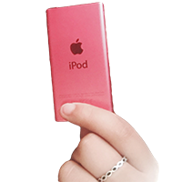

2006 ~ still using (Seoul and NYC)
SD Card
Currently in my room in NYC
My parents kept most of the SD cards that stored our memories. Our oldest one is from 2000, when my sister was born. Sadly, some of them are broken or not working. They have the photos, videos, and audio that my parents recorded since we were born and when SD cards were released. Then, after I started to get my music-listening devices, my dad used to store the music he downloaded for me on an SD card just in case I lost the device or reset it accidentally.

2006 (Seoul)
Cassette Player
Current location unknown
This cassette player was my dad’s music-listening device, and he gave it to me after he got a new computer and speakers. I don’t remember much about this device, but he gave me some cassette tapes he had, the only tapes I listened to. I had fun watching how the tape was running inside the player. I was curious about what was inside the tape, so I ruined several tapes by taking them from the case and playing with them like a string. Also, the headphones were too big for me, so I had to hold onto them when listening to the music.
2007 (Seoul)
CD Player
Currently in our house storage
This CD player has been in my parents’ house before I was born. I only have faded memories with this CD Player. My mother played audiobooks, classical music, and children’s music with this device for my sister and me. From a kid’s perspective, I called this device a “fly” because the player’s front side reminded me of a fly’s face. I was curious about how CDs worked because it seemed unbelievable that they could store so much in a small, flat, round object. So, I decided to split the CD in half to see what it was made of and how it works to play music. Nothing was there, of course, and I got a warning from my parents that I should never do it again since it can be fragile and dangerous.
2008 (Seoul)
iRiver T70 MP3 (8GB)
Current location unknown
I received this as a gift from my English teacher for being a great student. Iriver MP3 player was my first portable music-listening device and gave me new experiences of listening to music outside without any electric cords. However, there was difficulty and limited access to downloading music because I needed to figure out the process. Therefore, my dad downloaded the top 100 K-pop songs and about 30 pop songs from that period on the MP3 player. I couldn’t find or choose which songs I liked at the time. My music taste was ordinary/typical at the time. Besides, in my memories, the earbuds were very uncomfortable since I was a kid and were too big for my ears. So, I didn’t have a satisfying music-listening experience with this device. Maybe I was just too young.

2009 (Seoul)
Mickey MP3 (1GB)
Broken and thrown away
If these MP3 players were to be re-released today, I would collect them by color because they were my favorite of all the music-listening devices I had. I recall there were five colors, but my aunt gave me the white Mickey Mouse one as a gift. I saw her using it when I was a kid and wanted one so badly that I asked her to give it to me. So, I eventually got it. I still vividly remember listening to it on the bus ride to school. It was a screenless machine, so the music was on shuffle, and I remember the excitement of not knowing what was coming next. Back then, my dad would download music from his computer to this MP3 player. Unfortunately, I only used this device for about three months. I accidentally put this into the laundry machine, and it broke completely when I took it out; the ears were dangling apart, and I cried a lot. But my parents didn't get me a new one since it was my fault for not checking my pockets. I learned this lesson, and now I check my pockets whenever I do my laundry.
2010 (Seoul)
iPhone 3GS (16GB)
Currently stored in my drawer in Seoul
When I first saw this phone as a child, it reminded me of a bar of white soap. This phone was supposed to be my mother’s, but I asked her if I could carry it to school to listen to music and watch fun videos with my friends. Since the phone I had during this time didn’t play music or YouTube, the iPhone 3Gs was a dream come true for me and my friends. I could take it to school for about a month before my mom activated this new phone. Even though it was a long time ago, I still remember when all my friends from other classes came to my class during the break to watch or listen to music together. We even played a few games; our favorite was Angry Bird. Since most students didn’t have a smartphone in 2010, this device was a whole new world for all of us and gave us new experiences.
2012 (Seoul)
Galaxy M (32GB)
Current location unknown
Believe it or not, Galaxy M was my first and last Samsung phone. My dad finally bought me my first smartphone since the 2G phone I used broke when I was playing with my friends after school (it was an accident, not intended!). Additionally, my older sister got her first smartphone during 4th grade, so I had to wait until 4th grade to be ‘fair’ (my sister thought it was unfair if I got it before 4th grade). With this device, I listened to many songs and played several games, but most importantly, I recorded many things. I remember taking a photo of a dandelion every week to see how much it spread after each week. I also enjoyed recording a song that I wrote using voicememo. I played piano and violin back then and tried recording a composed song with this phone. Sadly, I couldn’t find this device after returning to Korea in 2018. But it will still be in my memory where I stored all my innocent and naive mind as a child.
May 2013 (Irvine, CA)
LG Slider (32GB)
Currently stored in my drawer in Seoul
LG Red Slider was the first phone I got in Irvine, California. After my mom saw my sister and I started to become addicted to social media, games, and YouTube videos, she decided to limit the use of smart devices to prevent it from getting worse. The only smart device we had was an iPad, which we shared. I hated this phone. As a teenager, I was unsatisfied with this device since I had already experienced how comfortable (and looked cool) it was to have a smartphone. I could at least listen to music that I downloaded from our computer. I didn’t take many photos with this device. Even though I resented my mother for getting this phone back then, now I know why she got this phone for us. She protected us from wasting precious time on small devices impacting our height, eyesight, sleeping patterns, and studying.

2014 (Irvine, CA)
iPod nano 7th generation (16GB)
Currently stored in my drawer in Seoul
The iPod Nano was the best MP3 player I ever had. I started collecting all the devices I used since I got my first iPod because I felt a strong bond or connection with the devices that stored moments of my life and memories. The design of the device and its features were modern and well-compacted, so I used it for three years without any issues. I’m still surprised by its lightweight and ability to store images and videos and listen to the radio. My sister used to download music for me from her laptop every two to four months as new songs were released. She had the same one but in silver color while mine was pink. With this device, I started to listen to several genres of music: K-pop, Pop, R&B, hip-hop, and classical.
September 29, 2014 (Irvine, CA)
iPod touch 5th generation (16GB)
Currently stored in my drawer in Seoul
After waiting two years, I finally got the iPod touch, almost like a smart device without a phone feature. When I asked my mother if I could get this, I promised to control my screen time. However, this was when Facebook, Snapchat, and Instagram grew exponentially, and most teenagers used them, including me. It was tough to control because I started texting and calling my friends in Korea, and the time difference made it even worse. This device and the iPhone 6s had the most cases because I missed collecting cute and extraordinary cases after two years of waiting. The best one I remember was the Hello Kitty and Rilakkuma plush phone case. It looked like a doll, so my friends were amazed when I played music from the iPod with the case. With its limited storage space, I struggled to organize and optimize the photos and videos I took. Therefore, I began using Google Photos to move the old ones there to get more space. I used Pandora when listening to music with the white Beats headphones. I still have both in my drawer.
March 12, 2016 (Irvine, CA)
iPhone 6S (16GB)
Currently stored in my drawer in Seoul
The iPhone 6s became my first iPhone since 2010. Its stunning rose gold color caught my eye, and I just had to have it. I loved taking screenshots of my home screen while listening to music to keep track of the songs, time and date, and album covers. In 2016, my go-to artists included The Weeknd, The 1975, Drake, Mitski, Twenty One Pilots, Rihanna, The Chainsmokers, Oasis, and Maroon 5 (there were more, but let's stop here). With my new phone, I signed up for Spotify and made playlists that still bring back fond memories. They take me back to the proms and parties of middle school, especially at Vista Verde K-8 School and Rancho San Joaquin Middle School in Irvine. I also played several games such as Subway Surfer, Clash Royale, Sims, and Pokémon GO.
Oct 24, 2017 (Irvine, CA)
iPhone 8 Plus (64GB)
Currently stored in my drawer in Seoul
Starting from the iPhone 8 Plus, I fell in love with the large screen and advanced camera lenses of the Plus/Pro line of iPhones. It was also the first time Apple brought Portrait mode to the camera, and I took thousands of photos with this device. I got a new digital mirrorless camera in 2016, and along with that one, my interest in photography became more intense. I recorded everything I could, including my family, surroundings, plants, sky, food, etc. With this device, I used the white and red colored beats earbuds to listen to music on Spotify. Lastly, I dropped the phone many times, which made the vibrating feature weird. It makes an odd noise when it vibrates wildly. My small hands were not used to this large device yet.
April 8, 2019 (Seoul)
iPhone XS Max (128GB)
Currently stored in my drawer in Seoul
During the Summer of 2018, our family returned to Seoul, our home. Then, the iPhone XS Max was released, but it was hard for me to let go of the iPhone 8 Plus in gold that retains a rosy hue. But as soon as my previous phone started to go crazy, I got the new one in gold (I actually liked the yellowish gold color). With this device, I often played bright and energetic music loudly on our school rooftop with my friends during break. We danced and sang to relieve the stress of school stuff, including college applications (SAT, portfolio, AP, GPA, extracurricular activities, and so much more). We also recorded several vlogs both inside and outside of school. They were exceptionally one of the most important videos on this device. Those cherished moments still make me smile and sometimes cry when watching. I believe the total duration of all the vlogs is about 12 hours. We even created a YouTube channel to upload our vlogs, but we only uploaded ASMRs and some playlists. I used an app called Genie Music (a music streaming service in South Korea) to listen to music with this device because I lost my Spotify account as my school account back in Irvine stopped working.
Nov 21, 2021 (New York)
iPhone 13 Pro Max (512GB)
Currently using
After waiting for years, the iPhone with my favorite color, blue, finally came out. Even when new iPhones came out after this one, I couldn’t change to a new one because they stopped making the Sierra blue color for the Pro line. I also got the matching colored Apple Watch Hermès when purchasing. I was obsessed with the beautiful and calm color of blue. iPhone 13 Pro Max was the first phone I got in NYC. I was thrilled to pick up my phone because I waited weeks to get it. I remember refreshing the site hundreds of times to get the Sierra Blue, but they only had one 512GB, so I got it immediately. I could store so much data in this device with much more storage space. As of April 1st, I have 221,634 photos/videos in my album (with an iCloud 2TB subscription since 2020). I use Spotify and YouTube to listen to music with my AirPods Pro and Airport Max. I also collect several Bluetooth speakers because I love having music surrounding me, even at home.